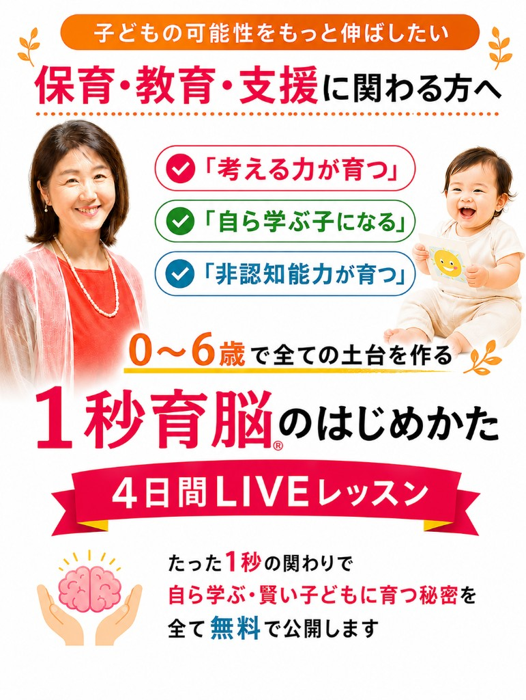

考える力が育つ
答えを急いで与えず、子どもが自分で考えようとする土台を育てます。

0〜6歳の土台をつくる1秒育脳の実践法
6月22日（月）スタート
Gmailなどのフリーメール推奨です。確認メールが届かない場合は迷惑メールフォルダもご確認ください。
保育・教育・支援の現場では、目の前の子どもの可能性をもっと伸ばしたいと思う場面が何度もあります。
でも実際には、関わり方に迷ったり、声かけが手探りになったり、 「もっとできることがあるはず」と感じながらも、現場で使える軸が見つからないことも少なくありません。
必要なのは、新しい正解を増やすことではなく、
子どもを「点」ではなく「線」で見る視点です。
答えを急いで与えず、子どもが自分で考えようとする土台を育てます。
やらせるのではなく、子どもが自分から動きたくなる関わり方を学びます。
自己肯定感、意欲、やり抜く力など、生きる土台になる力を伸ばします。
1秒育脳は、特別な教材や難しい理論よりも、日常のなかの短い関わりを大切にする考え方です。
ほんの一言、ほんの一瞬の見方や声かけが、子どもの反応を変え、支援の質そのものを変えていきます。
Mission
子どもの可能性を伸ばす関わり方を、 誰でも実践できる形で届けること。
0〜6歳の大切な時期に、日常のほんの1秒の関わりで、 学ぶ力、考える力、生きる力の土台を育てられることを伝えていきます。
Vision
「できない」で見る社会から、 「伸びる力」で見る社会へ。
目の前の行動だけで判断するのではなく、 その子が持つ未来の力を信じて関われる現場を増やしていきます。
Values
子どもの育ちは、その日の機嫌や一つの行動だけでは判断できません。 大切なのは、0歳から6歳までの発達をひとつながりで見ていくことです。
今の行動を見る
発達の意味を知る
関わり方を変える
支援の質が変わる
この視点があると、困った行動が「問題」ではなく「成長のサイン」として見えてきます。 だからこそ、支援が表面的で終わらず、その子に合った関わりへ変わっていきます。
DAY 1
子どもの可能性を伸ばすうえで、0〜6歳の土台づくりがなぜ重要なのかを整理します。
DAY 2
知識の詰め込みではなく、学ぶ力や非認知能力を育てる関わり方の違いをお伝えします。
DAY 3
現場ですぐ使える1秒育脳の見方と声かけのポイントを、具体例つきで体感します。
DAY 4
学んだ視点を現場や日々の支援にどう落とし込むか、実践の入り口をお伝えします。
1秒育脳は、子どもの行動をただ評価するのではなく、 発達の流れと可能性から見立てて、日々の関わりに落とし込むための実践です。
目の前の行動を単発で捉えず、発達の流れの中で見られるようになります。
子どもに届く言葉や関わるタイミングがわかり、日々の支援にそのまま活かせます。
保護者への説明やチーム内での共有にも、納得感のある言葉で伝えやすくなります。
「気になる行動をすぐに注意するのではなく、 成長のサインとして見られるようになった」 という声が届いています。
助産師さんや児童館職員さん、歯科衛生士さんなど幅広い職種の方が受講し、 説明の仕方や寄り添い方に変化を感じられています。
「現場での声かけに迷いが減り、 その子に合った関わり方を考えやすくなった」 という実感につながっています。
子どもの成長を支える大人の関わり方が変われば、
子どもの未来はもっと伸びていく。
その想いから、15年前に活動を始めました。
はい。保育・教育・支援の現場にいる方はもちろん、これから学びたい方にもわかりやすくお伝えします。
大丈夫です。これまでの経験や子どもに関わってきた実感も、支える力として十分価値になります。
案内メールをご確認ください。日程や視聴方法がわかるようにご登録後にご案内します。
0〜6歳の土台をつくる1秒育脳の実践法
6月22日（月）スタート
登録後のご案内メールで、参加方法をご確認いただけます。